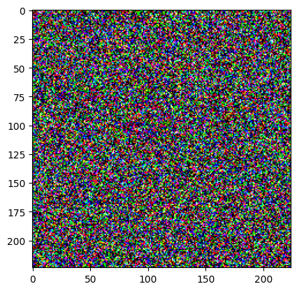
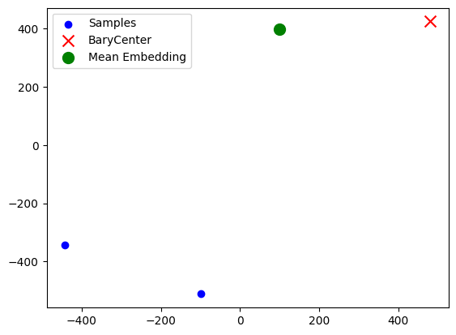

# import torch
# import os
# from datetime import datetime
# from fastcore.utils import * # type: ignore # noqa: F403
# from fedai.federated.agents import * # noqa: F403
# from fedai.optimizers import *
# from fedai.learner_utils import * # type: ignore # noqa: F403
# from fedai.client_selector import * # noqa: F403
# from fedai.trainers import * # noqa: F403
# from fedai.core import get_cfg # noqa: F401, F403
# from fedai.wandb_writer import * # noqa: F403Load CIFAR10
# # from fedai.FLearner import * # noqa: F403
# from fedai.learner_utils import * # noqa: F403
# from fedai.utils import * # noqa: F403
# from omegaconf import OmegaConfTrainer
# def cfg_fn(f):
# cfg = load_config(f) # noqa: F405
# cfg = OmegaConf.create(cfg)
# return cfg
# cfg = cfg_fn('../cfg.yaml')
# # cfg.data.name = 'CIFAR10'
# # cfg.model.name = 'CIFAR10CNN'
# cfg.lr = 0.005
# cfg.local_epochs = 5
# cfg.tau = 0.1
# cfg.model.name'CIFAR10CNN'# from torch import nn
# def client_fn(client_cls, cfg, id, latest_round, t, loss_fn = None, optimizer = None):
# model = get_model(cfg)
# criterion = get_criterion(loss_fn)
# train_block = get_block(cfg, id)
# test_block = get_block(cfg, id, train=False)
# state = {'model': model, 'optimizer': None, 'criterion': criterion, 't': t}
# if t > 1:
# state = load_state_from_disk(cfg, state, latest_round, id, t) # noqa: F405
# state['optimizer'] = SophiaG(state['model'].parameters(),
# lr=0.00002,
# betas=(0.965, 0.99),
# rho=0.01,
# weight_decay=1e-1)
# return client_cls(id, cfg, state, block= [train_block, test_block])# from fedai.FLearner import FLearner
# learner = FLearner(cfg,
# client_fn= client_fn,
# client_cls= FLAgent,
# trainer= FedSophiaTrainer)wandb: Using wandb-core as the SDK backend. Please refer to https://wandb.me/wandb-core for more information. wandb: Currently logged in as: ahmed-elbakary (edge-ai-team). Use `wandb login --relogin` to force relogin wandb: WARNING If you're specifying your api key in code, ensure this code is not shared publicly. wandb: WARNING Consider setting the WANDB_API_KEY environment variable, or running `wandb login` from the command line. wandb: Appending key for api.wandb.ai to your netrc file: /home/ahmed/.netrc
Tracking run with wandb version 0.19.1
Run data is saved locally in
/home/ahmed/Ahmed-home/1- Projects/fedai/nbs/examples/my_examples/wandb/run-20250305_134638-edfimf9m
View project at https://wandb.ai/edge-ai-team/example_project
# learner.run_simulation()data/CIFAR10/train data/CIFAR10/test
Dataset already generated.
data/CIFAR10/train data/CIFAR10/test
Dataset already generated.
0%| | 0/83 [00:01<?, ?it/s]--------------------------------------------------------------------------- FileNotFoundError Traceback (most recent call last) File ~/miniconda3/envs/fedai/lib/python3.10/site-packages/evaluate/loading.py:479, in HubEvaluationModuleFactory.get_module(self) 478 try: --> 479 local_path = self.download_loading_script(revision) 480 except FileNotFoundError as err: 481 # if there is no file found with current revision tag try to load main File ~/miniconda3/envs/fedai/lib/python3.10/site-packages/evaluate/loading.py:469, in HubEvaluationModuleFactory.download_loading_script(self, revision) 468 download_config.download_desc = "Downloading builder script" --> 469 return cached_path(file_path, download_config=download_config) File ~/miniconda3/envs/fedai/lib/python3.10/site-packages/evaluate/utils/file_utils.py:175, in cached_path(url_or_filename, download_config, **download_kwargs) 173 if is_remote_url(url_or_filename): 174 # URL, so get it from the cache (downloading if necessary) --> 175 output_path = get_from_cache( 176 url_or_filename, 177 cache_dir=cache_dir, 178 force_download=download_config.force_download, 179 proxies=download_config.proxies, 180 resume_download=download_config.resume_download, 181 user_agent=download_config.user_agent, 182 local_files_only=download_config.local_files_only, 183 use_etag=download_config.use_etag, 184 max_retries=download_config.max_retries, 185 token=download_config.token, 186 download_desc=download_config.download_desc, 187 ) 188 elif os.path.exists(url_or_filename): 189 # File, and it exists. File ~/miniconda3/envs/fedai/lib/python3.10/site-packages/evaluate/utils/file_utils.py:511, in get_from_cache(url, cache_dir, force_download, proxies, etag_timeout, resume_download, user_agent, local_files_only, use_etag, max_retries, token, download_desc) 510 elif response is not None and response.status_code == 404: --> 511 raise FileNotFoundError(f"Couldn't find file at {url}") 512 _raise_if_offline_mode_is_enabled(f"Tried to reach {url}") FileNotFoundError: Couldn't find file at https://huggingface.co/spaces/evaluate-metric/accuracy/resolve/v0.4.3/accuracy.py During handling of the above exception, another exception occurred: KeyboardInterrupt Traceback (most recent call last) Cell In[5], line 1 ----> 1 learner.run_simulation() File ~/Ahmed-home/1- Projects/fedai/fedai/FLearner.py:67, in run_simulation(self) 64 self.server.communicate(client) 66 trainer = self.trainer(client) ---> 67 client_history = trainer.fit() 68 round_res.append(client_history) 69 res.append(round_res) File ~/Ahmed-home/1- Projects/fedai/fedai/trainers.py:139, in fit(self) 136 train_loss.append(avg_train_loss) 137 train_metrics.append(metrics_train) --> 139 avg_test_loss, metrics_test = self.test() 140 test_loss.append(avg_test_loss) 141 test_metrics.append(metrics_test) File ~/Ahmed-home/1- Projects/fedai/fedai/trainers.py:184, in test(self) 181 if num_eval == 0: 182 num_eval = 1e-10 --> 184 loss, metrics = self._closure(batch) 186 # print(f"Client {self.client.id}'s Batch loss inside eval() : {loss}") 188 if (not torch.isnan(loss)) and (self.cfg.model.grad_norm_clip <= 0 or loss != 0.0): File ~/Ahmed-home/1- Projects/fedai/fedai/trainers.py:62, in _closure(self, batch) 60 metrcis = self.training_metrics.compute(y_pred= y_pred, y_true= y_true, tokenizer= self.client.tokenizer) 61 else: ---> 62 metrcis = self.training_metrics.compute(y_pred= y_pred, y_true= y_true) 64 else: 65 metrcis = {k: 0 for k in self.training_metrics} File ~/Ahmed-home/1- Projects/fedai/fedai/metrics.py:48, in compute(self, y_true, y_pred, tokenizer, **kwargs) 46 @patch 47 def compute(self: Metrics, y_true, y_pred, tokenizer= None, **kwargs): ---> 48 self.metrics = evaluate.combine(self.metrics_names) 49 if tokenizer: 50 y_true, y_pred = self.prepare_targets_llm(y_true, y_pred, tokenizer) File ~/miniconda3/envs/fedai/lib/python3.10/site-packages/evaluate/module.py:1034, in combine(evaluations, force_prefix) 1008 def combine(evaluations, force_prefix=False): 1009 """Combines several metrics, comparisons, or measurements into a single `CombinedEvaluations` object that 1010 can be used like a single evaluation module. 1011 (...) 1031 ``` 1032 """ -> 1034 return CombinedEvaluations(evaluations, force_prefix=force_prefix) File ~/miniconda3/envs/fedai/lib/python3.10/site-packages/evaluate/module.py:886, in CombinedEvaluations.__init__(self, evaluation_modules, force_prefix) 884 for module in self.evaluation_modules: 885 if isinstance(module, str): --> 886 module = load(module) 887 loaded_modules.append(module) 888 self.evaluation_modules = loaded_modules File ~/miniconda3/envs/fedai/lib/python3.10/site-packages/evaluate/loading.py:748, in load(path, config_name, module_type, process_id, num_process, cache_dir, experiment_id, keep_in_memory, download_config, download_mode, revision, **init_kwargs) 703 """Load a [`~evaluate.EvaluationModule`]. 704 705 Args: (...) 745 ``` 746 """ 747 download_mode = DownloadMode(download_mode or DownloadMode.REUSE_DATASET_IF_EXISTS) --> 748 evaluation_module = evaluation_module_factory( 749 path, module_type=module_type, revision=revision, download_config=download_config, download_mode=download_mode 750 ) 751 evaluation_cls = import_main_class(evaluation_module.module_path) 752 evaluation_instance = evaluation_cls( 753 config_name=config_name, 754 process_id=process_id, (...) 760 **init_kwargs, 761 ) File ~/miniconda3/envs/fedai/lib/python3.10/site-packages/evaluate/loading.py:639, in evaluation_module_factory(path, module_type, revision, download_config, download_mode, force_local_path, dynamic_modules_path, **download_kwargs) 631 for current_type in ["metric", "comparison", "measurement"]: 632 try: 633 return HubEvaluationModuleFactory( 634 f"evaluate-{current_type}/{path}", 635 revision=revision, 636 download_config=download_config, 637 download_mode=download_mode, 638 dynamic_modules_path=dynamic_modules_path, --> 639 ).get_module() 640 except ConnectionError: 641 pass File ~/miniconda3/envs/fedai/lib/python3.10/site-packages/evaluate/loading.py:484, in HubEvaluationModuleFactory.get_module(self) 482 if self.revision is None and os.getenv("HF_SCRIPTS_VERSION", SCRIPTS_VERSION) != "main": 483 revision = "main" --> 484 local_path = self.download_loading_script(revision) 485 else: 486 raise err File ~/miniconda3/envs/fedai/lib/python3.10/site-packages/evaluate/loading.py:469, in HubEvaluationModuleFactory.download_loading_script(self, revision) 467 if download_config.download_desc is None: 468 download_config.download_desc = "Downloading builder script" --> 469 return cached_path(file_path, download_config=download_config) File ~/miniconda3/envs/fedai/lib/python3.10/site-packages/evaluate/utils/file_utils.py:175, in cached_path(url_or_filename, download_config, **download_kwargs) 171 url_or_filename = str(url_or_filename) 173 if is_remote_url(url_or_filename): 174 # URL, so get it from the cache (downloading if necessary) --> 175 output_path = get_from_cache( 176 url_or_filename, 177 cache_dir=cache_dir, 178 force_download=download_config.force_download, 179 proxies=download_config.proxies, 180 resume_download=download_config.resume_download, 181 user_agent=download_config.user_agent, 182 local_files_only=download_config.local_files_only, 183 use_etag=download_config.use_etag, 184 max_retries=download_config.max_retries, 185 token=download_config.token, 186 download_desc=download_config.download_desc, 187 ) 188 elif os.path.exists(url_or_filename): 189 # File, and it exists. 190 output_path = url_or_filename File ~/miniconda3/envs/fedai/lib/python3.10/site-packages/evaluate/utils/file_utils.py:457, in get_from_cache(url, cache_dir, force_download, proxies, etag_timeout, resume_download, user_agent, local_files_only, use_etag, max_retries, token, download_desc) 455 connected = ftp_head(url) 456 try: --> 457 response = http_head( 458 url, 459 allow_redirects=True, 460 proxies=proxies, 461 timeout=etag_timeout, 462 max_retries=max_retries, 463 headers=headers, 464 ) 465 if response.status_code == 200: # ok 466 etag = response.headers.get("ETag") if use_etag else None File ~/miniconda3/envs/fedai/lib/python3.10/site-packages/evaluate/utils/file_utils.py:378, in http_head(url, proxies, headers, cookies, allow_redirects, timeout, max_retries) 376 headers = copy.deepcopy(headers) or {} 377 headers["user-agent"] = get_datasets_user_agent(user_agent=headers.get("user-agent")) --> 378 response = _request_with_retry( 379 method="HEAD", 380 url=url, 381 proxies=proxies, 382 headers=headers, 383 cookies=cookies, 384 allow_redirects=allow_redirects, 385 timeout=timeout, 386 max_retries=max_retries, 387 ) 388 return response File ~/miniconda3/envs/fedai/lib/python3.10/site-packages/evaluate/utils/file_utils.py:307, in _request_with_retry(method, url, max_retries, base_wait_time, max_wait_time, timeout, **params) 305 tries += 1 306 try: --> 307 response = requests.request(method=method.upper(), url=url, timeout=timeout, **params) 308 success = True 309 except (requests.exceptions.ConnectTimeout, requests.exceptions.ConnectionError) as err: File ~/miniconda3/envs/fedai/lib/python3.10/site-packages/requests/api.py:59, in request(method, url, **kwargs) 55 # By using the 'with' statement we are sure the session is closed, thus we 56 # avoid leaving sockets open which can trigger a ResourceWarning in some 57 # cases, and look like a memory leak in others. 58 with sessions.Session() as session: ---> 59 return session.request(method=method, url=url, **kwargs) File ~/miniconda3/envs/fedai/lib/python3.10/site-packages/requests/sessions.py:589, in Session.request(self, method, url, params, data, headers, cookies, files, auth, timeout, allow_redirects, proxies, hooks, stream, verify, cert, json) 584 send_kwargs = { 585 "timeout": timeout, 586 "allow_redirects": allow_redirects, 587 } 588 send_kwargs.update(settings) --> 589 resp = self.send(prep, **send_kwargs) 591 return resp File ~/miniconda3/envs/fedai/lib/python3.10/site-packages/requests/sessions.py:703, in Session.send(self, request, **kwargs) 700 start = preferred_clock() 702 # Send the request --> 703 r = adapter.send(request, **kwargs) 705 # Total elapsed time of the request (approximately) 706 elapsed = preferred_clock() - start File ~/miniconda3/envs/fedai/lib/python3.10/site-packages/requests/adapters.py:667, in HTTPAdapter.send(self, request, stream, timeout, verify, cert, proxies) 664 timeout = TimeoutSauce(connect=timeout, read=timeout) 666 try: --> 667 resp = conn.urlopen( 668 method=request.method, 669 url=url, 670 body=request.body, 671 headers=request.headers, 672 redirect=False, 673 assert_same_host=False, 674 preload_content=False, 675 decode_content=False, 676 retries=self.max_retries, 677 timeout=timeout, 678 chunked=chunked, 679 ) 681 except (ProtocolError, OSError) as err: 682 raise ConnectionError(err, request=request) File ~/miniconda3/envs/fedai/lib/python3.10/site-packages/urllib3/connectionpool.py:789, in HTTPConnectionPool.urlopen(self, method, url, body, headers, retries, redirect, assert_same_host, timeout, pool_timeout, release_conn, chunked, body_pos, preload_content, decode_content, **response_kw) 786 response_conn = conn if not release_conn else None 788 # Make the request on the HTTPConnection object --> 789 response = self._make_request( 790 conn, 791 method, 792 url, 793 timeout=timeout_obj, 794 body=body, 795 headers=headers, 796 chunked=chunked, 797 retries=retries, 798 response_conn=response_conn, 799 preload_content=preload_content, 800 decode_content=decode_content, 801 **response_kw, 802 ) 804 # Everything went great! 805 clean_exit = True File ~/miniconda3/envs/fedai/lib/python3.10/site-packages/urllib3/connectionpool.py:466, in HTTPConnectionPool._make_request(self, conn, method, url, body, headers, retries, timeout, chunked, response_conn, preload_content, decode_content, enforce_content_length) 463 try: 464 # Trigger any extra validation we need to do. 465 try: --> 466 self._validate_conn(conn) 467 except (SocketTimeout, BaseSSLError) as e: 468 self._raise_timeout(err=e, url=url, timeout_value=conn.timeout) File ~/miniconda3/envs/fedai/lib/python3.10/site-packages/urllib3/connectionpool.py:1095, in HTTPSConnectionPool._validate_conn(self, conn) 1093 # Force connect early to allow us to validate the connection. 1094 if conn.is_closed: -> 1095 conn.connect() 1097 # TODO revise this, see https://github.com/urllib3/urllib3/issues/2791 1098 if not conn.is_verified and not conn.proxy_is_verified: File ~/miniconda3/envs/fedai/lib/python3.10/site-packages/urllib3/connection.py:730, in HTTPSConnection.connect(self) 727 # Remove trailing '.' from fqdn hostnames to allow certificate validation 728 server_hostname_rm_dot = server_hostname.rstrip(".") --> 730 sock_and_verified = _ssl_wrap_socket_and_match_hostname( 731 sock=sock, 732 cert_reqs=self.cert_reqs, 733 ssl_version=self.ssl_version, 734 ssl_minimum_version=self.ssl_minimum_version, 735 ssl_maximum_version=self.ssl_maximum_version, 736 ca_certs=self.ca_certs, 737 ca_cert_dir=self.ca_cert_dir, 738 ca_cert_data=self.ca_cert_data, 739 cert_file=self.cert_file, 740 key_file=self.key_file, 741 key_password=self.key_password, 742 server_hostname=server_hostname_rm_dot, 743 ssl_context=self.ssl_context, 744 tls_in_tls=tls_in_tls, 745 assert_hostname=self.assert_hostname, 746 assert_fingerprint=self.assert_fingerprint, 747 ) 748 self.sock = sock_and_verified.socket 750 # If an error occurs during connection/handshake we may need to release 751 # our lock so another connection can probe the origin. File ~/miniconda3/envs/fedai/lib/python3.10/site-packages/urllib3/connection.py:909, in _ssl_wrap_socket_and_match_hostname(sock, cert_reqs, ssl_version, ssl_minimum_version, ssl_maximum_version, cert_file, key_file, key_password, ca_certs, ca_cert_dir, ca_cert_data, assert_hostname, assert_fingerprint, server_hostname, ssl_context, tls_in_tls) 906 if is_ipaddress(normalized): 907 server_hostname = normalized --> 909 ssl_sock = ssl_wrap_socket( 910 sock=sock, 911 keyfile=key_file, 912 certfile=cert_file, 913 key_password=key_password, 914 ca_certs=ca_certs, 915 ca_cert_dir=ca_cert_dir, 916 ca_cert_data=ca_cert_data, 917 server_hostname=server_hostname, 918 ssl_context=context, 919 tls_in_tls=tls_in_tls, 920 ) 922 try: 923 if assert_fingerprint: File ~/miniconda3/envs/fedai/lib/python3.10/site-packages/urllib3/util/ssl_.py:469, in ssl_wrap_socket(sock, keyfile, certfile, cert_reqs, ca_certs, server_hostname, ssl_version, ciphers, ssl_context, ca_cert_dir, key_password, ca_cert_data, tls_in_tls) 465 context.load_cert_chain(certfile, keyfile, key_password) 467 context.set_alpn_protocols(ALPN_PROTOCOLS) --> 469 ssl_sock = _ssl_wrap_socket_impl(sock, context, tls_in_tls, server_hostname) 470 return ssl_sock File ~/miniconda3/envs/fedai/lib/python3.10/site-packages/urllib3/util/ssl_.py:513, in _ssl_wrap_socket_impl(sock, ssl_context, tls_in_tls, server_hostname) 510 SSLTransport._validate_ssl_context_for_tls_in_tls(ssl_context) 511 return SSLTransport(sock, ssl_context, server_hostname) --> 513 return ssl_context.wrap_socket(sock, server_hostname=server_hostname) File ~/miniconda3/envs/fedai/lib/python3.10/ssl.py:513, in SSLContext.wrap_socket(self, sock, server_side, do_handshake_on_connect, suppress_ragged_eofs, server_hostname, session) 507 def wrap_socket(self, sock, server_side=False, 508 do_handshake_on_connect=True, 509 suppress_ragged_eofs=True, 510 server_hostname=None, session=None): 511 # SSLSocket class handles server_hostname encoding before it calls 512 # ctx._wrap_socket() --> 513 return self.sslsocket_class._create( 514 sock=sock, 515 server_side=server_side, 516 do_handshake_on_connect=do_handshake_on_connect, 517 suppress_ragged_eofs=suppress_ragged_eofs, 518 server_hostname=server_hostname, 519 context=self, 520 session=session 521 ) File ~/miniconda3/envs/fedai/lib/python3.10/ssl.py:1104, in SSLSocket._create(cls, sock, server_side, do_handshake_on_connect, suppress_ragged_eofs, server_hostname, context, session) 1101 if timeout == 0.0: 1102 # non-blocking 1103 raise ValueError("do_handshake_on_connect should not be specified for non-blocking sockets") -> 1104 self.do_handshake() 1105 except (OSError, ValueError): 1106 self.close() File ~/miniconda3/envs/fedai/lib/python3.10/ssl.py:1375, in SSLSocket.do_handshake(self, block) 1373 if timeout == 0.0 and block: 1374 self.settimeout(None) -> 1375 self._sslobj.do_handshake() 1376 finally: 1377 self.settimeout(timeout) KeyboardInterrupt:
Error in callback <bound method _WandbInit._pause_backend of <wandb.sdk.wandb_init._WandbInit object>> (for post_run_cell), with arguments args (<ExecutionResult object at 7fe5f2577b80, execution_count=5 error_before_exec=None error_in_exec= info=<ExecutionInfo object at 7fe4f5082b30, raw_cell="learner.run_simulation() " store_history=True silent=False shell_futures=True cell_id=vscode-notebook-cell:/home/ahmed/Ahmed-home/1-%20Projects/fedai/nbs/examples/my_examples/observer.ipynb#W5sZmlsZQ%3D%3D> result=None>,),kwargs {}:--------------------------------------------------------------------------- BrokenPipeError Traceback (most recent call last) File ~/miniconda3/envs/fedai/lib/python3.10/site-packages/wandb/sdk/wandb_init.py:440, in _WandbInit._pause_backend(self, *args, **kwargs) 438 if self.backend.interface is not None: 439 logger.info("pausing backend") # type: ignore --> 440 self.backend.interface.publish_pause() File ~/miniconda3/envs/fedai/lib/python3.10/site-packages/wandb/sdk/interface/interface.py:756, in InterfaceBase.publish_pause(self) 754 def publish_pause(self) -> None: 755 pause = pb.PauseRequest() --> 756 self._publish_pause(pause) File ~/miniconda3/envs/fedai/lib/python3.10/site-packages/wandb/sdk/interface/interface_shared.py:362, in InterfaceShared._publish_pause(self, pause) 360 def _publish_pause(self, pause: pb.PauseRequest) -> None: 361 rec = self._make_request(pause=pause) --> 362 self._publish(rec) File ~/miniconda3/envs/fedai/lib/python3.10/site-packages/wandb/sdk/interface/interface_sock.py:51, in InterfaceSock._publish(self, record, local) 49 def _publish(self, record: "pb.Record", local: Optional[bool] = None) -> None: 50 self._assign(record) ---> 51 self._sock_client.send_record_publish(record) File ~/miniconda3/envs/fedai/lib/python3.10/site-packages/wandb/sdk/lib/sock_client.py:222, in SockClient.send_record_publish(self, record) 220 server_req = spb.ServerRequest() 221 server_req.record_publish.CopyFrom(record) --> 222 self.send_server_request(server_req) File ~/miniconda3/envs/fedai/lib/python3.10/site-packages/wandb/sdk/lib/sock_client.py:154, in SockClient.send_server_request(self, msg) 153 def send_server_request(self, msg: Any) -> None: --> 154 self._send_message(msg) File ~/miniconda3/envs/fedai/lib/python3.10/site-packages/wandb/sdk/lib/sock_client.py:151, in SockClient._send_message(self, msg) 149 header = struct.pack("<BI", ord("W"), raw_size) 150 with self._lock: --> 151 self._sendall_with_error_handle(header + data) File ~/miniconda3/envs/fedai/lib/python3.10/site-packages/wandb/sdk/lib/sock_client.py:130, in SockClient._sendall_with_error_handle(self, data) 128 start_time = time.monotonic() 129 try: --> 130 sent = self._sock.send(data) 131 # sent equal to 0 indicates a closed socket 132 if sent == 0: BrokenPipeError: [Errno 32] Broken pipe
# import wandb
# wandb.finish()Error in callback <bound method _WandbInit._resume_backend of <wandb.sdk.wandb_init._WandbInit object>> (for pre_run_cell), with arguments args (<ExecutionInfo object at 7fe4ddd05ff0, raw_cell="import wandb
wandb.finish()" store_history=True silent=False shell_futures=True cell_id=vscode-notebook-cell:/home/ahmed/Ahmed-home/1-%20Projects/fedai/nbs/examples/my_examples/observer.ipynb#W6sZmlsZQ%3D%3D>,),kwargs {}:--------------------------------------------------------------------------- BrokenPipeError Traceback (most recent call last) File ~/miniconda3/envs/fedai/lib/python3.10/site-packages/wandb/sdk/wandb_init.py:445, in _WandbInit._resume_backend(self, *args, **kwargs) 443 if self.backend is not None and self.backend.interface is not None: 444 logger.info("resuming backend") # type: ignore --> 445 self.backend.interface.publish_resume() File ~/miniconda3/envs/fedai/lib/python3.10/site-packages/wandb/sdk/interface/interface.py:764, in InterfaceBase.publish_resume(self) 762 def publish_resume(self) -> None: 763 resume = pb.ResumeRequest() --> 764 self._publish_resume(resume) File ~/miniconda3/envs/fedai/lib/python3.10/site-packages/wandb/sdk/interface/interface_shared.py:366, in InterfaceShared._publish_resume(self, resume) 364 def _publish_resume(self, resume: pb.ResumeRequest) -> None: 365 rec = self._make_request(resume=resume) --> 366 self._publish(rec) File ~/miniconda3/envs/fedai/lib/python3.10/site-packages/wandb/sdk/interface/interface_sock.py:51, in InterfaceSock._publish(self, record, local) 49 def _publish(self, record: "pb.Record", local: Optional[bool] = None) -> None: 50 self._assign(record) ---> 51 self._sock_client.send_record_publish(record) File ~/miniconda3/envs/fedai/lib/python3.10/site-packages/wandb/sdk/lib/sock_client.py:222, in SockClient.send_record_publish(self, record) 220 server_req = spb.ServerRequest() 221 server_req.record_publish.CopyFrom(record) --> 222 self.send_server_request(server_req) File ~/miniconda3/envs/fedai/lib/python3.10/site-packages/wandb/sdk/lib/sock_client.py:154, in SockClient.send_server_request(self, msg) 153 def send_server_request(self, msg: Any) -> None: --> 154 self._send_message(msg) File ~/miniconda3/envs/fedai/lib/python3.10/site-packages/wandb/sdk/lib/sock_client.py:151, in SockClient._send_message(self, msg) 149 header = struct.pack("<BI", ord("W"), raw_size) 150 with self._lock: --> 151 self._sendall_with_error_handle(header + data) File ~/miniconda3/envs/fedai/lib/python3.10/site-packages/wandb/sdk/lib/sock_client.py:130, in SockClient._sendall_with_error_handle(self, data) 128 start_time = time.monotonic() 129 try: --> 130 sent = self._sock.send(data) 131 # sent equal to 0 indicates a closed socket 132 if sent == 0: BrokenPipeError: [Errno 32] Broken pipe
--------------------------------------------------------------------------- BrokenPipeError Traceback (most recent call last) Cell In[6], line 2 1 import wandb ----> 2 wandb.finish() File ~/miniconda3/envs/fedai/lib/python3.10/site-packages/wandb/sdk/wandb_run.py:4066, in finish(exit_code, quiet) 4049 """Finish a run and upload any remaining data. 4050 4051 Marks the completion of a W&B run and ensures all data is synced to the server. (...) 4063 quiet: Deprecated. Configure logging verbosity using `wandb.Settings(quiet=...)`. 4064 """ 4065 if wandb.run: -> 4066 wandb.run.finish(exit_code=exit_code, quiet=quiet) File ~/miniconda3/envs/fedai/lib/python3.10/site-packages/wandb/sdk/wandb_run.py:440, in _run_decorator._noop.<locals>.wrapper(self, *args, **kwargs) 437 wandb.termwarn(message, repeat=False) 438 return cls.Dummy() --> 440 return func(self, *args, **kwargs) File ~/miniconda3/envs/fedai/lib/python3.10/site-packages/wandb/sdk/wandb_run.py:382, in _run_decorator._attach.<locals>.wrapper(self, *args, **kwargs) 380 raise e 381 cls._is_attaching = "" --> 382 return func(self, *args, **kwargs) File ~/miniconda3/envs/fedai/lib/python3.10/site-packages/wandb/sdk/wandb_run.py:2094, in Run.finish(self, exit_code, quiet) 2086 if quiet is not None: 2087 deprecate.deprecate( 2088 field_name=deprecate.Deprecated.run__finish_quiet, 2089 warning_message=( (...) 2092 ), 2093 ) -> 2094 return self._finish(exit_code) File ~/miniconda3/envs/fedai/lib/python3.10/site-packages/wandb/sdk/wandb_run.py:2101, in Run._finish(self, exit_code) 2096 def _finish( 2097 self, 2098 exit_code: int | None = None, 2099 ) -> None: 2100 logger.info(f"finishing run {self._get_path()}") -> 2101 with telemetry.context(run=self) as tel: 2102 tel.feature.finish = True 2104 # Pop this run (hopefully) from the run stack, to support the "reinit" 2105 # functionality of wandb.init(). 2106 # 2107 # TODO: It's not clear how _global_run_stack could have length other 2108 # than 1 at this point in the code. If you're reading this, consider 2109 # refactoring this thing. File ~/miniconda3/envs/fedai/lib/python3.10/site-packages/wandb/sdk/lib/telemetry.py:42, in _TelemetryObject.__exit__(self, exctype, excinst, exctb) 40 if not self._run: 41 return ---> 42 self._run._telemetry_callback(self._obj) File ~/miniconda3/envs/fedai/lib/python3.10/site-packages/wandb/sdk/wandb_run.py:767, in Run._telemetry_callback(self, telem_obj) 765 self._telemetry_obj.MergeFrom(telem_obj) 766 self._telemetry_obj_dirty = True --> 767 self._telemetry_flush() File ~/miniconda3/envs/fedai/lib/python3.10/site-packages/wandb/sdk/wandb_run.py:780, in Run._telemetry_flush(self) 778 if serialized == self._telemetry_obj_flushed: 779 return --> 780 self._backend.interface._publish_telemetry(self._telemetry_obj) 781 self._telemetry_obj_flushed = serialized 782 self._telemetry_obj_dirty = False File ~/miniconda3/envs/fedai/lib/python3.10/site-packages/wandb/sdk/interface/interface_shared.py:101, in InterfaceShared._publish_telemetry(self, telem) 99 def _publish_telemetry(self, telem: tpb.TelemetryRecord) -> None: 100 rec = self._make_record(telemetry=telem) --> 101 self._publish(rec) File ~/miniconda3/envs/fedai/lib/python3.10/site-packages/wandb/sdk/interface/interface_sock.py:51, in InterfaceSock._publish(self, record, local) 49 def _publish(self, record: "pb.Record", local: Optional[bool] = None) -> None: 50 self._assign(record) ---> 51 self._sock_client.send_record_publish(record) File ~/miniconda3/envs/fedai/lib/python3.10/site-packages/wandb/sdk/lib/sock_client.py:222, in SockClient.send_record_publish(self, record) 220 server_req = spb.ServerRequest() 221 server_req.record_publish.CopyFrom(record) --> 222 self.send_server_request(server_req) File ~/miniconda3/envs/fedai/lib/python3.10/site-packages/wandb/sdk/lib/sock_client.py:154, in SockClient.send_server_request(self, msg) 153 def send_server_request(self, msg: Any) -> None: --> 154 self._send_message(msg) File ~/miniconda3/envs/fedai/lib/python3.10/site-packages/wandb/sdk/lib/sock_client.py:151, in SockClient._send_message(self, msg) 149 header = struct.pack("<BI", ord("W"), raw_size) 150 with self._lock: --> 151 self._sendall_with_error_handle(header + data) File ~/miniconda3/envs/fedai/lib/python3.10/site-packages/wandb/sdk/lib/sock_client.py:130, in SockClient._sendall_with_error_handle(self, data) 128 start_time = time.monotonic() 129 try: --> 130 sent = self._sock.send(data) 131 # sent equal to 0 indicates a closed socket 132 if sent == 0: BrokenPipeError: [Errno 32] Broken pipe
Error in callback <bound method _WandbInit._pause_backend of <wandb.sdk.wandb_init._WandbInit object>> (for post_run_cell), with arguments args (<ExecutionResult object at 7fe4ddd058d0, execution_count=6 error_before_exec=None error_in_exec=[Errno 32] Broken pipe info=<ExecutionInfo object at 7fe4ddd05ff0, raw_cell="import wandb
wandb.finish()" store_history=True silent=False shell_futures=True cell_id=vscode-notebook-cell:/home/ahmed/Ahmed-home/1-%20Projects/fedai/nbs/examples/my_examples/observer.ipynb#W6sZmlsZQ%3D%3D> result=None>,),kwargs {}:--------------------------------------------------------------------------- BrokenPipeError Traceback (most recent call last) File ~/miniconda3/envs/fedai/lib/python3.10/site-packages/wandb/sdk/wandb_init.py:440, in _WandbInit._pause_backend(self, *args, **kwargs) 438 if self.backend.interface is not None: 439 logger.info("pausing backend") # type: ignore --> 440 self.backend.interface.publish_pause() File ~/miniconda3/envs/fedai/lib/python3.10/site-packages/wandb/sdk/interface/interface.py:756, in InterfaceBase.publish_pause(self) 754 def publish_pause(self) -> None: 755 pause = pb.PauseRequest() --> 756 self._publish_pause(pause) File ~/miniconda3/envs/fedai/lib/python3.10/site-packages/wandb/sdk/interface/interface_shared.py:362, in InterfaceShared._publish_pause(self, pause) 360 def _publish_pause(self, pause: pb.PauseRequest) -> None: 361 rec = self._make_request(pause=pause) --> 362 self._publish(rec) File ~/miniconda3/envs/fedai/lib/python3.10/site-packages/wandb/sdk/interface/interface_sock.py:51, in InterfaceSock._publish(self, record, local) 49 def _publish(self, record: "pb.Record", local: Optional[bool] = None) -> None: 50 self._assign(record) ---> 51 self._sock_client.send_record_publish(record) File ~/miniconda3/envs/fedai/lib/python3.10/site-packages/wandb/sdk/lib/sock_client.py:222, in SockClient.send_record_publish(self, record) 220 server_req = spb.ServerRequest() 221 server_req.record_publish.CopyFrom(record) --> 222 self.send_server_request(server_req) File ~/miniconda3/envs/fedai/lib/python3.10/site-packages/wandb/sdk/lib/sock_client.py:154, in SockClient.send_server_request(self, msg) 153 def send_server_request(self, msg: Any) -> None: --> 154 self._send_message(msg) File ~/miniconda3/envs/fedai/lib/python3.10/site-packages/wandb/sdk/lib/sock_client.py:151, in SockClient._send_message(self, msg) 149 header = struct.pack("<BI", ord("W"), raw_size) 150 with self._lock: --> 151 self._sendall_with_error_handle(header + data) File ~/miniconda3/envs/fedai/lib/python3.10/site-packages/wandb/sdk/lib/sock_client.py:130, in SockClient._sendall_with_error_handle(self, data) 128 start_time = time.monotonic() 129 try: --> 130 sent = self._sock.send(data) 131 # sent equal to 0 indicates a closed socket 132 if sent == 0: BrokenPipeError: [Errno 32] Broken pipe
# # get mnist from pytorch
# import torch
# import torchvision
# import torchvision.transforms as transforms
# import torch.nn as nn
# import torch.nn.functional as F
# import torch.optim as optim
# import matplotlib.pyplot as plt
# import numpy as np
# # transform PILImage to tensor
# preprocess = transforms.Compose([
# transforms.Resize(256),
# transforms.CenterCrop(224),
# transforms.ToTensor(),
# transforms.Normalize(mean=[0.485, 0.456, 0.406], std=[0.229, 0.224, 0.225]),
# ])
# # get trainset and testset
# trainset = torchvision.datasets.CIFAR10(root='./data', train=True,
# download=True, transform=preprocess)
# train_loader = torch.utils.data.DataLoader(trainset, batch_size=4,
# shuffle=True, num_workers=2)
# testset = torchvision.datasets.CIFAR10(root='./data', train=False,
# download=True, transform=preprocess)
# test_loader = torch.utils.data.DataLoader(testset, batch_size=4,
# shuffle=False, num_workers=2)
# # get 10 classes
# classes = ('0', '1', '2', '3', '4',
# '5', '6', '7', '8', '9')Files already downloaded and verified
Files already downloaded and verifiedModels
# # deefine resnet without the classifer
# from torchvision import models
# resnet18 = models.resnet18(pretrained=True)
# model = torch.nn.Sequential(*list(resnet18.children())[:-1])/usr/local/lib/python3.10/dist-packages/torchvision/models/_utils.py:208: UserWarning: The parameter 'pretrained' is deprecated since 0.13 and may be removed in the future, please use 'weights' instead.
warnings.warn(
/usr/local/lib/python3.10/dist-packages/torchvision/models/_utils.py:223: UserWarning: Arguments other than a weight enum or `None` for 'weights' are deprecated since 0.13 and may be removed in the future. The current behavior is equivalent to passing `weights=ResNet18_Weights.IMAGENET1K_V1`. You can also use `weights=ResNet18_Weights.DEFAULT` to get the most up-to-date weights.
warnings.warn(msg)
Downloading: "https://download.pytorch.org/models/resnet18-f37072fd.pth" to /root/.cache/torch/hub/checkpoints/resnet18-f37072fd.pth
100%|██████████| 44.7M/44.7M [00:00<00:00, 205MB/s]# class SimpleMLP(nn.Module):
# def __init__(self):
# super(SimpleMLP, self).__init__()
# # First fully connected block
# self.fc1 = nn.Linear(512, 256) # Input size of 128 (features from CNN output or other input)
# self.relu1 = nn.ReLU()
# # Second fully connected block
# self.fc2 = nn.Linear(256, 256)
# self.relu2 = nn.ReLU()
# # Final output layer
# self.fc3 = nn.Linear(256, 512) # Smaller output for feature learning
# def forward(self, x):
# x = self.relu1(self.fc1(x))
# x = self.relu2(self.fc2(x))
# x = self.fc3(x)
# return x# import torch
# import torch.nn as nn
# class ImprovedMLP(nn.Module):
# def __init__(self):
# super(ImprovedMLP, self).__init__()
# # First fully connected block with BatchNorm and Dropout
# self.fc1 = nn.Linear(512, 256)
# self.bn1 = nn.BatchNorm1d(256) # Batch Normalization
# self.act1 = nn.ReLU() # Swish activation
# self.drop1 = nn.Dropout(0.2) # Regularization
# # Second fully connected block with a residual connection
# self.fc2 = nn.Linear(256, 256)
# self.bn2 = nn.BatchNorm1d(256)
# self.act2 = nn.ReLU()
# self.drop2 = nn.Dropout(0.2)
# # Final output layer
# self.fc3 = nn.Linear(256, 512)
# def forward(self, x):
# residual = x # Store original input for residual connection
# x = self.fc1(x)
# x = self.bn1(x)
# x = self.act1(x)
# x = self.drop1(x)
# x = self.fc2(x)
# x = self.bn2(x)
# x = self.act2(x)
# x = self.drop2(x)
# x = self.fc3(x)
# x = x + residual # Residual connection
# return x# class LSTM_h(nn.Module):
# def __init__(self):
# super(LSTM_h, self).__init__()
# self.lstm = nn.LSTM(512, 512, 1)
# self.fc = nn.Linear(512, 512)
# def forward(self, x):
# x = x.view(-1, 512, 1)
# x, _ = self.lstm(x)
# x = x[-1, :, :]
# x = self.fc(x)
# return x# observer = ImprovedMLP()
# observer = observer.to('cuda')
# model = model.to('cuda')States Dataset
# image_index_map = {i: trainset[i][0] for i in range(len(trainset))} # Maps idx → image tensor# import os
# # Define loss and optimizer
# criterion = nn.CrossEntropyLoss()
# optimizer = optim.Adam(resnet18.parameters(), lr=0.001)
# # Directory to store features
# os.makedirs("features", exist_ok=True)
# # Training loop with feature tracking
# num_epochs = 10
# for epoch in range(num_epochs):
# resnet18.train()
# for images, labels in train_loader:
# images, labels = images.to("cuda"), labels.to("cuda")
# # Forward pass
# outputs = resnet18(images)
# loss = criterion(outputs, labels)
# # Backward and optimize
# optimizer.zero_grad()
# loss.backward()
# optimizer.step()
# # Extract features at this epoch for each image
# resnet18.eval()
# with torch.no_grad():
# with open(f"features/epoch_{epoch}.pt", "wb") as f:
# feature_dict = {} # Store features temporarily
# for img_idx in range(len(trainset)): # Process each image separately
# image, _ = trainset[img_idx] # Load image dynamically
# image = image.unsqueeze(0).to("cuda") # Add batch dimension
# feature = trainset(image).squeeze().cpu() # Shape: (512,)
# feature_dict[img_idx] = feature # Store feature
# torch.save(feature_dict, f) # Save features for the current epoch
# print(f"Epoch [{epoch+1}/{num_epochs}] completed. Features saved.")## # create a data set of all consecutive hiiden states and make it memry efficient
# class FeatureDataset(torch.utils.data.Dataset):
# def __init__(self, model, data_loader):
# self.model = model
# self.model.eval()
# self.data_loader = data_loader
# def __len__(self):
# return len(self.data_loader.dataset) - 1
# def __getitem__(self, idx):
# with torch.no_grad():
# data, _ = self.data_loader.dataset[idx]
# d2, _ = self.data_loader.dataset[idx+1]
# h1 = self.model(data.to('cuda').unsqueeze(0)).view(-1)
# h2 = self.model(d2.to('cuda').unsqueeze(0)).view(-1)
# return h1, h2# ds_train = FeatureDataset(model, trainloader)
# dl_train = torch.utils.data.DataLoader(ds_train, batch_size=32, shuffle=True)
# ds_test = FeatureDataset(model, testloader)
# dl_test = torch.utils.data.DataLoader(ds_test, batch_size=32, shuffle=True)# len(dl_train)12500# !pip install wandbRequirement already satisfied: wandb in /usr/local/lib/python3.10/dist-packages (0.19.1)
Requirement already satisfied: click!=8.0.0,>=7.1 in /usr/local/lib/python3.10/dist-packages (from wandb) (8.1.7)
Requirement already satisfied: docker-pycreds>=0.4.0 in /usr/local/lib/python3.10/dist-packages (from wandb) (0.4.0)
Requirement already satisfied: gitpython!=3.1.29,>=1.0.0 in /usr/local/lib/python3.10/dist-packages (from wandb) (3.1.43)
Requirement already satisfied: platformdirs in /usr/local/lib/python3.10/dist-packages (from wandb) (4.3.6)
Requirement already satisfied: protobuf!=4.21.0,!=5.28.0,<6,>=3.19.0 in /usr/local/lib/python3.10/dist-packages (from wandb) (3.20.3)
Requirement already satisfied: psutil>=5.0.0 in /usr/local/lib/python3.10/dist-packages (from wandb) (5.9.5)
Requirement already satisfied: pydantic<3,>=2.6 in /usr/local/lib/python3.10/dist-packages (from wandb) (2.11.0a1)
Requirement already satisfied: pyyaml in /usr/local/lib/python3.10/dist-packages (from wandb) (6.0.2)
Requirement already satisfied: requests<3,>=2.0.0 in /usr/local/lib/python3.10/dist-packages (from wandb) (2.32.3)
Requirement already satisfied: sentry-sdk>=2.0.0 in /usr/local/lib/python3.10/dist-packages (from wandb) (2.19.2)
Requirement already satisfied: setproctitle in /usr/local/lib/python3.10/dist-packages (from wandb) (1.3.4)
Requirement already satisfied: setuptools in /usr/local/lib/python3.10/dist-packages (from wandb) (75.1.0)
Requirement already satisfied: typing-extensions<5,>=4.4 in /usr/local/lib/python3.10/dist-packages (from wandb) (4.12.2)
Requirement already satisfied: six>=1.4.0 in /usr/local/lib/python3.10/dist-packages (from docker-pycreds>=0.4.0->wandb) (1.17.0)
Requirement already satisfied: gitdb<5,>=4.0.1 in /usr/local/lib/python3.10/dist-packages (from gitpython!=3.1.29,>=1.0.0->wandb) (4.0.11)
Requirement already satisfied: annotated-types>=0.6.0 in /usr/local/lib/python3.10/dist-packages (from pydantic<3,>=2.6->wandb) (0.7.0)
Requirement already satisfied: pydantic-core==2.28.0 in /usr/local/lib/python3.10/dist-packages (from pydantic<3,>=2.6->wandb) (2.28.0)
Requirement already satisfied: charset-normalizer<4,>=2 in /usr/local/lib/python3.10/dist-packages (from requests<3,>=2.0.0->wandb) (3.4.1)
Requirement already satisfied: idna<4,>=2.5 in /usr/local/lib/python3.10/dist-packages (from requests<3,>=2.0.0->wandb) (3.10)
Requirement already satisfied: urllib3<3,>=1.21.1 in /usr/local/lib/python3.10/dist-packages (from requests<3,>=2.0.0->wandb) (2.3.0)
Requirement already satisfied: certifi>=2017.4.17 in /usr/local/lib/python3.10/dist-packages (from requests<3,>=2.0.0->wandb) (2025.1.31)
Requirement already satisfied: smmap<6,>=3.0.1 in /usr/local/lib/python3.10/dist-packages (from gitdb<5,>=4.0.1->gitpython!=3.1.29,>=1.0.0->wandb) (5.0.1)# import wandb
# wandb.login(key="0c6ac9fee5239a432529a35c7433d121ec9c9f37",
# verify=True)wandb: Using wandb-core as the SDK backend. Please refer to https://wandb.me/wandb-core for more information. wandb: Currently logged in as: ahmed-elbakary (edge-ai-team). Use `wandb login --relogin` to force relogin wandb: WARNING If you're specifying your api key in code, ensure this code is not shared publicly. wandb: WARNING Consider setting the WANDB_API_KEY environment variable, or running `wandb login` from the command line. wandb: Appending key for api.wandb.ai to your netrc file: /root/.netrc
True# # train the model
# criterion = nn.MSELoss()
# optimizer = torch.optim.Adam(observer.parameters(), lr=1e-3, weight_decay=1e-5)
# n_epochs = 2
# # start a new wandb run to track this script
# wandb.init(
# # set the wandb project where this run will be logged
# project="observer",
# # track hyperparameters and run metadata
# config={
# "learning_rate": 0.0001,
# "architecture": "MLP",
# "dataset": "CIFAR10", # first 2000 videos of the dataset
# "epochs": n_epochs,
# }
# )
# for epoch in range(n_epochs): # loop over the dataset multiple times
# running_loss = 0.0
# for i, data in enumerate(dl_train):
# # get the inputs; data is a list of [inputs, labels]
# h, h_next = data
# # zero the parameter gradients
# optimizer.zero_grad()
# # forward + backward + optimize
# outputs = observer(h.to('cuda'))
# loss = criterion(outputs, h_next.to('cuda'))
# loss.backward()
# optimizer.step()
# # print statistics
# running_loss += loss.item()
# print("here***"*4)
# if i % 200 == 199: # print every 2000 mini-batches
# print('Train: [%d, %5d] loss: %.3f' %
# (epoch + 1, i + 1, running_loss / 200))
# avg_train_loss = running_loss / 200
# wandb.log({"Train Loss": avg_train_loss})
# running_loss = 0.0
# # compute the loss for the test set
# running_loss_test = 0.0
# with torch.no_grad():
# for j, data in enumerate(dl_test):
# # get the inputs; data is a list of [inputs, labels]
# h, h_next = data
# # forward + backward + optimize
# outputs = observer(h.to('cuda'))
# loss = criterion(outputs, h_next.to('cuda'))
# # print statistics
# running_loss_test += loss.item()
# if j % 200 == 199: # print every 2000 mini-batches
# print('Test: [%d, %5d] loss: %.3f' %
# (epoch + 1, j + 1, running_loss_test / 200))
# avg_test_loss = running_loss_test / 200
# wandb.log({"Test Loss": avg_test_loss})
# ## FIXME
# # https://pytorch.org/tutorials/beginner/introyt/trainingyt.html
# running_loss_test = 0.0
# wandb.finish()here***here***here***here***
Test: [1, 200] loss: 1.022
Test: [1, 400] loss: 1.029
Test: [1, 600] loss: 1.006
Test: [1, 800] loss: 1.012
Test: [1, 1000] loss: 1.005
Test: [1, 1200] loss: 1.018
Test: [1, 1400] loss: 1.028
Test: [1, 1600] loss: 1.021
Test: [1, 1800] loss: 1.026
Test: [1, 2000] loss: 1.030
Test: [1, 2200] loss: 1.009
Test: [1, 2400] loss: 1.030
here***here***here***here***
Test: [1, 200] loss: 1.023
Test: [1, 400] loss: 1.021
Test: [1, 600] loss: 1.011
Test: [1, 800] loss: 1.023
Test: [1, 1000] loss: 1.021
Test: [1, 1200] loss: 1.004
Test: [1, 1400] loss: 1.021
Test: [1, 1600] loss: 1.024
Test: [1, 1800] loss: 1.019
Test: [1, 2000] loss: 1.028
Test: [1, 2200] loss: 1.019
Test: [1, 2400] loss: 1.021
here***here***here***here***
Test: [1, 200] loss: 1.023
Test: [1, 400] loss: 1.012
Test: [1, 600] loss: 1.031
Test: [1, 800] loss: 1.012
Test: [1, 1000] loss: 1.023
Test: [1, 1200] loss: 1.034
Test: [1, 1400] loss: 1.005
Test: [1, 1600] loss: 1.018
Test: [1, 1800] loss: 1.018
Test: [1, 2000] loss: 1.038
Test: [1, 2200] loss: 1.017
Test: [1, 2400] loss: 1.019
here***here***here***here***
Test: [1, 200] loss: 1.024
Test: [1, 400] loss: 1.012
Test: [1, 600] loss: 1.031
Test: [1, 800] loss: 1.028
Test: [1, 1000] loss: 1.012
Test: [1, 1200] loss: 1.033
Test: [1, 1400] loss: 1.022
Test: [1, 1600] loss: 1.017
Test: [1, 1800] loss: 1.014
Test: [1, 2000] loss: 1.026
Test: [1, 2200] loss: 1.016
Test: [1, 2400] loss: 1.028
here***here***here***here***
Test: [1, 200] loss: 1.031
Test: [1, 400] loss: 1.008
Test: [1, 600] loss: 1.028
Test: [1, 800] loss: 1.014
Test: [1, 1000] loss: 1.013
Test: [1, 1200] loss: 1.032
Test: [1, 1400] loss: 1.022
Test: [1, 1600] loss: 1.021
Test: [1, 1800] loss: 1.026
Test: [1, 2000] loss: 1.021
Test: [1, 2200] loss: 1.034
Test: [1, 2400] loss: 1.027
here***here***here***here***
Test: [1, 200] loss: 1.034
Test: [1, 400] loss: 1.018
Test: [1, 600] loss: 1.028
Test: [1, 800] loss: 1.021
Test: [1, 1000] loss: 1.039
Test: [1, 1200] loss: 1.026
Test: [1, 1400] loss: 1.014
Test: [1, 1600] loss: 1.021
Test: [1, 1800] loss: 1.024
Test: [1, 2000] loss: 1.005
Test: [1, 2200] loss: 1.014
Test: [1, 2400] loss: 1.018
here***here***here***here***
Test: [1, 200] loss: 1.028
Test: [1, 400] loss: 1.024
Test: [1, 600] loss: 1.015
Test: [1, 800] loss: 1.028
Test: [1, 1000] loss: 1.013
Test: [1, 1200] loss: 1.025
Test: [1, 1400] loss: 1.012
Test: [1, 1600] loss: 1.027
Test: [1, 1800] loss: 1.024
Test: [1, 2000] loss: 1.029
Test: [1, 2200] loss: 1.020
Test: [1, 2400] loss: 1.019
here***here***here***here***
Test: [1, 200] loss: 1.020
Test: [1, 400] loss: 1.006
Test: [1, 600] loss: 1.015
Test: [1, 800] loss: 1.026
Test: [1, 1000] loss: 1.005
Test: [1, 1200] loss: 1.021
Test: [1, 1400] loss: 1.030
Test: [1, 1600] loss: 1.031
Test: [1, 1800] loss: 1.021
Test: [1, 2000] loss: 1.027
Test: [1, 2200] loss: 1.028
Test: [1, 2400] loss: 1.022
here***here***here***here***
Test: [1, 200] loss: 1.037
Test: [1, 400] loss: 1.019
Test: [1, 600] loss: 1.014
Test: [1, 800] loss: 1.035
Test: [1, 1000] loss: 1.008
Test: [1, 1200] loss: 1.022
Test: [1, 1400] loss: 1.020
Test: [1, 1600] loss: 1.019
Test: [1, 1800] loss: 1.012
Test: [1, 2000] loss: 1.027--------------------------------------------------------------------------- KeyboardInterrupt Traceback (most recent call last) <ipython-input-51-6e8331a40639> in <cell line: 22>() 51 running_loss_test = 0.0 52 with torch.no_grad(): ---> 53 for j, data in enumerate(dl_test): 54 # get the inputs; data is a list of [inputs, labels] 55 h, h_next = data /usr/local/lib/python3.10/dist-packages/torch/utils/data/dataloader.py in __next__(self) 699 # TODO(https://github.com/pytorch/pytorch/issues/76750) 700 self._reset() # type: ignore[call-arg] --> 701 data = self._next_data() 702 self._num_yielded += 1 703 if ( /usr/local/lib/python3.10/dist-packages/torch/utils/data/dataloader.py in _next_data(self) 755 def _next_data(self): 756 index = self._next_index() # may raise StopIteration --> 757 data = self._dataset_fetcher.fetch(index) # may raise StopIteration 758 if self._pin_memory: 759 data = _utils.pin_memory.pin_memory(data, self._pin_memory_device) /usr/local/lib/python3.10/dist-packages/torch/utils/data/_utils/fetch.py in fetch(self, possibly_batched_index) 50 data = self.dataset.__getitems__(possibly_batched_index) 51 else: ---> 52 data = [self.dataset[idx] for idx in possibly_batched_index] 53 else: 54 data = self.dataset[possibly_batched_index] /usr/local/lib/python3.10/dist-packages/torch/utils/data/_utils/fetch.py in <listcomp>(.0) 50 data = self.dataset.__getitems__(possibly_batched_index) 51 else: ---> 52 data = [self.dataset[idx] for idx in possibly_batched_index] 53 else: 54 data = self.dataset[possibly_batched_index] <ipython-input-26-56a65ee6d610> in __getitem__(self, idx) 15 d2, _ = self.data_loader.dataset[idx+1] 16 h1 = self.model(data.to('cuda').unsqueeze(0)).view(-1) ---> 17 h2 = self.model(d2.to('cuda').unsqueeze(0)).view(-1) 18 return h1, h2 /usr/local/lib/python3.10/dist-packages/torch/nn/modules/module.py in _wrapped_call_impl(self, *args, **kwargs) 1734 return self._compiled_call_impl(*args, **kwargs) # type: ignore[misc] 1735 else: -> 1736 return self._call_impl(*args, **kwargs) 1737 1738 # torchrec tests the code consistency with the following code /usr/local/lib/python3.10/dist-packages/torch/nn/modules/module.py in _call_impl(self, *args, **kwargs) 1745 or _global_backward_pre_hooks or _global_backward_hooks 1746 or _global_forward_hooks or _global_forward_pre_hooks): -> 1747 return forward_call(*args, **kwargs) 1748 1749 result = None /usr/local/lib/python3.10/dist-packages/torch/nn/modules/container.py in forward(self, input) 248 def forward(self, input): 249 for module in self: --> 250 input = module(input) 251 return input 252 /usr/local/lib/python3.10/dist-packages/torch/nn/modules/module.py in _wrapped_call_impl(self, *args, **kwargs) 1734 return self._compiled_call_impl(*args, **kwargs) # type: ignore[misc] 1735 else: -> 1736 return self._call_impl(*args, **kwargs) 1737 1738 # torchrec tests the code consistency with the following code /usr/local/lib/python3.10/dist-packages/torch/nn/modules/module.py in _call_impl(self, *args, **kwargs) 1745 or _global_backward_pre_hooks or _global_backward_hooks 1746 or _global_forward_hooks or _global_forward_pre_hooks): -> 1747 return forward_call(*args, **kwargs) 1748 1749 result = None /usr/local/lib/python3.10/dist-packages/torch/nn/modules/container.py in forward(self, input) 248 def forward(self, input): 249 for module in self: --> 250 input = module(input) 251 return input 252 /usr/local/lib/python3.10/dist-packages/torch/nn/modules/module.py in _wrapped_call_impl(self, *args, **kwargs) 1734 return self._compiled_call_impl(*args, **kwargs) # type: ignore[misc] 1735 else: -> 1736 return self._call_impl(*args, **kwargs) 1737 1738 # torchrec tests the code consistency with the following code /usr/local/lib/python3.10/dist-packages/torch/nn/modules/module.py in _call_impl(self, *args, **kwargs) 1745 or _global_backward_pre_hooks or _global_backward_hooks 1746 or _global_forward_hooks or _global_forward_pre_hooks): -> 1747 return forward_call(*args, **kwargs) 1748 1749 result = None /usr/local/lib/python3.10/dist-packages/torchvision/models/resnet.py in forward(self, x) 90 identity = x 91 ---> 92 out = self.conv1(x) 93 out = self.bn1(out) 94 out = self.relu(out) /usr/local/lib/python3.10/dist-packages/torch/nn/modules/module.py in _wrapped_call_impl(self, *args, **kwargs) 1734 return self._compiled_call_impl(*args, **kwargs) # type: ignore[misc] 1735 else: -> 1736 return self._call_impl(*args, **kwargs) 1737 1738 # torchrec tests the code consistency with the following code /usr/local/lib/python3.10/dist-packages/torch/nn/modules/module.py in _call_impl(self, *args, **kwargs) 1745 or _global_backward_pre_hooks or _global_backward_hooks 1746 or _global_forward_hooks or _global_forward_pre_hooks): -> 1747 return forward_call(*args, **kwargs) 1748 1749 result = None /usr/local/lib/python3.10/dist-packages/torch/nn/modules/conv.py in forward(self, input) 552 553 def forward(self, input: Tensor) -> Tensor: --> 554 return self._conv_forward(input, self.weight, self.bias) 555 556 /usr/local/lib/python3.10/dist-packages/torch/nn/modules/conv.py in _conv_forward(self, input, weight, bias) 547 self.groups, 548 ) --> 549 return F.conv2d( 550 input, weight, bias, self.stride, self.padding, self.dilation, self.groups 551 ) KeyboardInterrupt:
############# from fedai.utils import *
# # from fedai.FLearner import * # noqa: F403
# from fedai.learner_utils import * # noqa: F403
# from fedai.utils import * # noqa: F403
# from omegaconf import OmegaConf
# def cfg_fn(f):
# cfg = load_config(f) # noqa: F405
# cfg = OmegaConf.create(cfg)
# return cfg
# cfg = cfg_fn('./examples/cfg.yaml')# from torchvision.transforms import v2
# mnist_transform = v2.Compose([
# v2.Grayscale(num_output_channels=3), # Convert grayscale to RGB (1 → 3 channels)
# v2.Resize((224, 224)), # Resize to 224x224
# v2.ToTensor(), # Convert to tensor (values in range [0,1])
# v2.Normalize(mean=[0.485, 0.456, 0.406], std=[0.229, 0.224, 0.225]) # ImageNet normalization
# ])# from fedai.vision.VisionBlock import VisionBlock
# block = VisionBlock(cfg, 0, transform=mnist_transform) # noqa: F405data/MNIST/train data/MNIST/test
Dataset not found, Downloading the dataset: MNIST.
Downloading http://yann.lecun.com/exdb/mnist/train-images-idx3-ubyte.gz
Failed to download (trying next):
HTTP Error 404: Not Found
Downloading https://ossci-datasets.s3.amazonaws.com/mnist/train-images-idx3-ubyte.gz
Downloading https://ossci-datasets.s3.amazonaws.com/mnist/train-images-idx3-ubyte.gz to data/MNIST/rawdata/MNIST/raw/train-images-idx3-ubyte.gz100%|██████████| 9912422/9912422 [00:05<00:00, 1715517.95it/s]Extracting data/MNIST/rawdata/MNIST/raw/train-images-idx3-ubyte.gz to data/MNIST/rawdata/MNIST/raw
Downloading http://yann.lecun.com/exdb/mnist/train-labels-idx1-ubyte.gz
Failed to download (trying next):
HTTP Error 404: Not Found
Downloading https://ossci-datasets.s3.amazonaws.com/mnist/train-labels-idx1-ubyte.gz
Downloading https://ossci-datasets.s3.amazonaws.com/mnist/train-labels-idx1-ubyte.gz to data/MNIST/rawdata/MNIST/raw/train-labels-idx1-ubyte.gz100%|██████████| 28881/28881 [00:00<00:00, 211459.24it/s]Extracting data/MNIST/rawdata/MNIST/raw/train-labels-idx1-ubyte.gz to data/MNIST/rawdata/MNIST/raw
Downloading http://yann.lecun.com/exdb/mnist/t10k-images-idx3-ubyte.gz
Failed to download (trying next):
HTTP Error 404: Not Found
Downloading https://ossci-datasets.s3.amazonaws.com/mnist/t10k-images-idx3-ubyte.gz
Downloading https://ossci-datasets.s3.amazonaws.com/mnist/t10k-images-idx3-ubyte.gz to data/MNIST/rawdata/MNIST/raw/t10k-images-idx3-ubyte.gz100%|██████████| 1648877/1648877 [00:00<00:00, 2114882.94it/s]Extracting data/MNIST/rawdata/MNIST/raw/t10k-images-idx3-ubyte.gz to data/MNIST/rawdata/MNIST/raw
Downloading http://yann.lecun.com/exdb/mnist/t10k-labels-idx1-ubyte.gz
Failed to download (trying next):
HTTP Error 404: Not Found
Downloading https://ossci-datasets.s3.amazonaws.com/mnist/t10k-labels-idx1-ubyte.gz
Downloading https://ossci-datasets.s3.amazonaws.com/mnist/t10k-labels-idx1-ubyte.gz to data/MNIST/rawdata/MNIST/raw/t10k-labels-idx1-ubyte.gz100%|██████████| 4542/4542 [00:00<00:00, 1902769.55it/s]Extracting data/MNIST/rawdata/MNIST/raw/t10k-labels-idx1-ubyte.gz to data/MNIST/rawdata/MNIST/raw
The Kernel crashed while executing code in the current cell or a previous cell. Please review the code in the cell(s) to identify a possible cause of the failure. Click <a href='https://aka.ms/vscodeJupyterKernelCrash'>here</a> for more info. View Jupyter <a href='command:jupyter.viewOutput'>log</a> for further details.
# block[0].keys()dict_keys(['x', 'y'])# x = block[2]['x']
# x.shapetorch.Size([1, 28, 28])# # instantiate resnet50 model
# import torchvision.models as models
# resnet50 = models.resnet50(pretrained=True)/home/ahmed/miniconda3/envs/fedai/lib/python3.10/site-packages/torchvision/models/_utils.py:208: UserWarning: The parameter 'pretrained' is deprecated since 0.13 and may be removed in the future, please use 'weights' instead.
warnings.warn(
/home/ahmed/miniconda3/envs/fedai/lib/python3.10/site-packages/torchvision/models/_utils.py:223: UserWarning: Arguments other than a weight enum or `None` for 'weights' are deprecated since 0.13 and may be removed in the future. The current behavior is equivalent to passing `weights=ResNet50_Weights.IMAGENET1K_V1`. You can also use `weights=ResNet50_Weights.DEFAULT` to get the most up-to-date weights.
warnings.warn(msg)# import torch
# # Remove the final fully connected layer
# model = torch.nn.Sequential(*list(resnet50.children())[:-1]) # Removes 'fc'
# # Set to evaluation mode
# model.eval()
# # Check model structure (it ends at avgpool now)
# print(model)Sequential(
(0): Conv2d(3, 64, kernel_size=(7, 7), stride=(2, 2), padding=(3, 3), bias=False)
(1): BatchNorm2d(64, eps=1e-05, momentum=0.1, affine=True, track_running_stats=True)
(2): ReLU(inplace=True)
(3): MaxPool2d(kernel_size=3, stride=2, padding=1, dilation=1, ceil_mode=False)
(4): Sequential(
(0): Bottleneck(
(conv1): Conv2d(64, 64, kernel_size=(1, 1), stride=(1, 1), bias=False)
(bn1): BatchNorm2d(64, eps=1e-05, momentum=0.1, affine=True, track_running_stats=True)
(conv2): Conv2d(64, 64, kernel_size=(3, 3), stride=(1, 1), padding=(1, 1), bias=False)
(bn2): BatchNorm2d(64, eps=1e-05, momentum=0.1, affine=True, track_running_stats=True)
(conv3): Conv2d(64, 256, kernel_size=(1, 1), stride=(1, 1), bias=False)
(bn3): BatchNorm2d(256, eps=1e-05, momentum=0.1, affine=True, track_running_stats=True)
(relu): ReLU(inplace=True)
(downsample): Sequential(
(0): Conv2d(64, 256, kernel_size=(1, 1), stride=(1, 1), bias=False)
(1): BatchNorm2d(256, eps=1e-05, momentum=0.1, affine=True, track_running_stats=True)
)
)
(1): Bottleneck(
(conv1): Conv2d(256, 64, kernel_size=(1, 1), stride=(1, 1), bias=False)
(bn1): BatchNorm2d(64, eps=1e-05, momentum=0.1, affine=True, track_running_stats=True)
(conv2): Conv2d(64, 64, kernel_size=(3, 3), stride=(1, 1), padding=(1, 1), bias=False)
(bn2): BatchNorm2d(64, eps=1e-05, momentum=0.1, affine=True, track_running_stats=True)
(conv3): Conv2d(64, 256, kernel_size=(1, 1), stride=(1, 1), bias=False)
(bn3): BatchNorm2d(256, eps=1e-05, momentum=0.1, affine=True, track_running_stats=True)
(relu): ReLU(inplace=True)
)
(2): Bottleneck(
(conv1): Conv2d(256, 64, kernel_size=(1, 1), stride=(1, 1), bias=False)
(bn1): BatchNorm2d(64, eps=1e-05, momentum=0.1, affine=True, track_running_stats=True)
(conv2): Conv2d(64, 64, kernel_size=(3, 3), stride=(1, 1), padding=(1, 1), bias=False)
(bn2): BatchNorm2d(64, eps=1e-05, momentum=0.1, affine=True, track_running_stats=True)
(conv3): Conv2d(64, 256, kernel_size=(1, 1), stride=(1, 1), bias=False)
(bn3): BatchNorm2d(256, eps=1e-05, momentum=0.1, affine=True, track_running_stats=True)
(relu): ReLU(inplace=True)
)
)
(5): Sequential(
(0): Bottleneck(
(conv1): Conv2d(256, 128, kernel_size=(1, 1), stride=(1, 1), bias=False)
(bn1): BatchNorm2d(128, eps=1e-05, momentum=0.1, affine=True, track_running_stats=True)
(conv2): Conv2d(128, 128, kernel_size=(3, 3), stride=(2, 2), padding=(1, 1), bias=False)
(bn2): BatchNorm2d(128, eps=1e-05, momentum=0.1, affine=True, track_running_stats=True)
(conv3): Conv2d(128, 512, kernel_size=(1, 1), stride=(1, 1), bias=False)
(bn3): BatchNorm2d(512, eps=1e-05, momentum=0.1, affine=True, track_running_stats=True)
(relu): ReLU(inplace=True)
(downsample): Sequential(
(0): Conv2d(256, 512, kernel_size=(1, 1), stride=(2, 2), bias=False)
(1): BatchNorm2d(512, eps=1e-05, momentum=0.1, affine=True, track_running_stats=True)
)
)
(1): Bottleneck(
(conv1): Conv2d(512, 128, kernel_size=(1, 1), stride=(1, 1), bias=False)
(bn1): BatchNorm2d(128, eps=1e-05, momentum=0.1, affine=True, track_running_stats=True)
(conv2): Conv2d(128, 128, kernel_size=(3, 3), stride=(1, 1), padding=(1, 1), bias=False)
(bn2): BatchNorm2d(128, eps=1e-05, momentum=0.1, affine=True, track_running_stats=True)
(conv3): Conv2d(128, 512, kernel_size=(1, 1), stride=(1, 1), bias=False)
(bn3): BatchNorm2d(512, eps=1e-05, momentum=0.1, affine=True, track_running_stats=True)
(relu): ReLU(inplace=True)
)
(2): Bottleneck(
(conv1): Conv2d(512, 128, kernel_size=(1, 1), stride=(1, 1), bias=False)
(bn1): BatchNorm2d(128, eps=1e-05, momentum=0.1, affine=True, track_running_stats=True)
(conv2): Conv2d(128, 128, kernel_size=(3, 3), stride=(1, 1), padding=(1, 1), bias=False)
(bn2): BatchNorm2d(128, eps=1e-05, momentum=0.1, affine=True, track_running_stats=True)
(conv3): Conv2d(128, 512, kernel_size=(1, 1), stride=(1, 1), bias=False)
(bn3): BatchNorm2d(512, eps=1e-05, momentum=0.1, affine=True, track_running_stats=True)
(relu): ReLU(inplace=True)
)
(3): Bottleneck(
(conv1): Conv2d(512, 128, kernel_size=(1, 1), stride=(1, 1), bias=False)
(bn1): BatchNorm2d(128, eps=1e-05, momentum=0.1, affine=True, track_running_stats=True)
(conv2): Conv2d(128, 128, kernel_size=(3, 3), stride=(1, 1), padding=(1, 1), bias=False)
(bn2): BatchNorm2d(128, eps=1e-05, momentum=0.1, affine=True, track_running_stats=True)
(conv3): Conv2d(128, 512, kernel_size=(1, 1), stride=(1, 1), bias=False)
(bn3): BatchNorm2d(512, eps=1e-05, momentum=0.1, affine=True, track_running_stats=True)
(relu): ReLU(inplace=True)
)
)
(6): Sequential(
(0): Bottleneck(
(conv1): Conv2d(512, 256, kernel_size=(1, 1), stride=(1, 1), bias=False)
(bn1): BatchNorm2d(256, eps=1e-05, momentum=0.1, affine=True, track_running_stats=True)
(conv2): Conv2d(256, 256, kernel_size=(3, 3), stride=(2, 2), padding=(1, 1), bias=False)
(bn2): BatchNorm2d(256, eps=1e-05, momentum=0.1, affine=True, track_running_stats=True)
(conv3): Conv2d(256, 1024, kernel_size=(1, 1), stride=(1, 1), bias=False)
(bn3): BatchNorm2d(1024, eps=1e-05, momentum=0.1, affine=True, track_running_stats=True)
(relu): ReLU(inplace=True)
(downsample): Sequential(
(0): Conv2d(512, 1024, kernel_size=(1, 1), stride=(2, 2), bias=False)
(1): BatchNorm2d(1024, eps=1e-05, momentum=0.1, affine=True, track_running_stats=True)
)
)
(1): Bottleneck(
(conv1): Conv2d(1024, 256, kernel_size=(1, 1), stride=(1, 1), bias=False)
(bn1): BatchNorm2d(256, eps=1e-05, momentum=0.1, affine=True, track_running_stats=True)
(conv2): Conv2d(256, 256, kernel_size=(3, 3), stride=(1, 1), padding=(1, 1), bias=False)
(bn2): BatchNorm2d(256, eps=1e-05, momentum=0.1, affine=True, track_running_stats=True)
(conv3): Conv2d(256, 1024, kernel_size=(1, 1), stride=(1, 1), bias=False)
(bn3): BatchNorm2d(1024, eps=1e-05, momentum=0.1, affine=True, track_running_stats=True)
(relu): ReLU(inplace=True)
)
(2): Bottleneck(
(conv1): Conv2d(1024, 256, kernel_size=(1, 1), stride=(1, 1), bias=False)
(bn1): BatchNorm2d(256, eps=1e-05, momentum=0.1, affine=True, track_running_stats=True)
(conv2): Conv2d(256, 256, kernel_size=(3, 3), stride=(1, 1), padding=(1, 1), bias=False)
(bn2): BatchNorm2d(256, eps=1e-05, momentum=0.1, affine=True, track_running_stats=True)
(conv3): Conv2d(256, 1024, kernel_size=(1, 1), stride=(1, 1), bias=False)
(bn3): BatchNorm2d(1024, eps=1e-05, momentum=0.1, affine=True, track_running_stats=True)
(relu): ReLU(inplace=True)
)
(3): Bottleneck(
(conv1): Conv2d(1024, 256, kernel_size=(1, 1), stride=(1, 1), bias=False)
(bn1): BatchNorm2d(256, eps=1e-05, momentum=0.1, affine=True, track_running_stats=True)
(conv2): Conv2d(256, 256, kernel_size=(3, 3), stride=(1, 1), padding=(1, 1), bias=False)
(bn2): BatchNorm2d(256, eps=1e-05, momentum=0.1, affine=True, track_running_stats=True)
(conv3): Conv2d(256, 1024, kernel_size=(1, 1), stride=(1, 1), bias=False)
(bn3): BatchNorm2d(1024, eps=1e-05, momentum=0.1, affine=True, track_running_stats=True)
(relu): ReLU(inplace=True)
)
(4): Bottleneck(
(conv1): Conv2d(1024, 256, kernel_size=(1, 1), stride=(1, 1), bias=False)
(bn1): BatchNorm2d(256, eps=1e-05, momentum=0.1, affine=True, track_running_stats=True)
(conv2): Conv2d(256, 256, kernel_size=(3, 3), stride=(1, 1), padding=(1, 1), bias=False)
(bn2): BatchNorm2d(256, eps=1e-05, momentum=0.1, affine=True, track_running_stats=True)
(conv3): Conv2d(256, 1024, kernel_size=(1, 1), stride=(1, 1), bias=False)
(bn3): BatchNorm2d(1024, eps=1e-05, momentum=0.1, affine=True, track_running_stats=True)
(relu): ReLU(inplace=True)
)
(5): Bottleneck(
(conv1): Conv2d(1024, 256, kernel_size=(1, 1), stride=(1, 1), bias=False)
(bn1): BatchNorm2d(256, eps=1e-05, momentum=0.1, affine=True, track_running_stats=True)
(conv2): Conv2d(256, 256, kernel_size=(3, 3), stride=(1, 1), padding=(1, 1), bias=False)
(bn2): BatchNorm2d(256, eps=1e-05, momentum=0.1, affine=True, track_running_stats=True)
(conv3): Conv2d(256, 1024, kernel_size=(1, 1), stride=(1, 1), bias=False)
(bn3): BatchNorm2d(1024, eps=1e-05, momentum=0.1, affine=True, track_running_stats=True)
(relu): ReLU(inplace=True)
)
)
(7): Sequential(
(0): Bottleneck(
(conv1): Conv2d(1024, 512, kernel_size=(1, 1), stride=(1, 1), bias=False)
(bn1): BatchNorm2d(512, eps=1e-05, momentum=0.1, affine=True, track_running_stats=True)
(conv2): Conv2d(512, 512, kernel_size=(3, 3), stride=(2, 2), padding=(1, 1), bias=False)
(bn2): BatchNorm2d(512, eps=1e-05, momentum=0.1, affine=True, track_running_stats=True)
(conv3): Conv2d(512, 2048, kernel_size=(1, 1), stride=(1, 1), bias=False)
(bn3): BatchNorm2d(2048, eps=1e-05, momentum=0.1, affine=True, track_running_stats=True)
(relu): ReLU(inplace=True)
(downsample): Sequential(
(0): Conv2d(1024, 2048, kernel_size=(1, 1), stride=(2, 2), bias=False)
(1): BatchNorm2d(2048, eps=1e-05, momentum=0.1, affine=True, track_running_stats=True)
)
)
(1): Bottleneck(
(conv1): Conv2d(2048, 512, kernel_size=(1, 1), stride=(1, 1), bias=False)
(bn1): BatchNorm2d(512, eps=1e-05, momentum=0.1, affine=True, track_running_stats=True)
(conv2): Conv2d(512, 512, kernel_size=(3, 3), stride=(1, 1), padding=(1, 1), bias=False)
(bn2): BatchNorm2d(512, eps=1e-05, momentum=0.1, affine=True, track_running_stats=True)
(conv3): Conv2d(512, 2048, kernel_size=(1, 1), stride=(1, 1), bias=False)
(bn3): BatchNorm2d(2048, eps=1e-05, momentum=0.1, affine=True, track_running_stats=True)
(relu): ReLU(inplace=True)
)
(2): Bottleneck(
(conv1): Conv2d(2048, 512, kernel_size=(1, 1), stride=(1, 1), bias=False)
(bn1): BatchNorm2d(512, eps=1e-05, momentum=0.1, affine=True, track_running_stats=True)
(conv2): Conv2d(512, 512, kernel_size=(3, 3), stride=(1, 1), padding=(1, 1), bias=False)
(bn2): BatchNorm2d(512, eps=1e-05, momentum=0.1, affine=True, track_running_stats=True)
(conv3): Conv2d(512, 2048, kernel_size=(1, 1), stride=(1, 1), bias=False)
(bn3): BatchNorm2d(2048, eps=1e-05, momentum=0.1, affine=True, track_running_stats=True)
(relu): ReLU(inplace=True)
)
)
(8): AdaptiveAvgPool2d(output_size=(1, 1))
)# batch = torch.randn(64, 3, 224, 224)
# features = model(batch)# # visualize first image
# import matplotlib.pyplot as plt
# plt.imshow(batch[0].permute(1, 2, 0))
# plt.show()Clipping input data to the valid range for imshow with RGB data ([0..1] for floats or [0..255] for integers).
# features.shapetorch.Size([64, 2048, 1, 1])# # Import necessary libraries
# import torch
# import numpy as np
# import matplotlib.pyplot as plt
# from sklearn.manifold import TSNE
# # Compute mean feature vector
# avg_features = features.mean(dim=0, keepdim=True) # Shape: (1, 2048)
# # Stack avg_features with the original features
# all_features = torch.cat([features, avg_features], dim=0) # Shape: (65, 2048)
# # Convert to NumPy
# flat_features = all_features.view(65, -1).detach().numpy()
# # Perform t-SNE
# tsne = TSNE(n_components=2)
# tsne_features = tsne.fit_transform(flat_features) # Shape: (65, 2)
# # Separate the transformed mean feature vector
# avg_features_tsne = tsne_features[-1, :] # Last point corresponds to avg_features
# sample_tsne_features = tsne_features[:-1, :] # All other points
# # Plot t-SNE results
# plt.scatter(sample_tsne_features[:, 0], sample_tsne_features[:, 1], label="Samples", color='blue')
# plt.scatter(avg_features_tsne[0], avg_features_tsne[1], color='red', marker='x', s=100, label="Mean Embedding")
# # Add legend
# plt.legend()
# plt.show()--------------------------------------------------------------------------- NameError Traceback (most recent call last) Cell In[65], line 8 5 from sklearn.manifold import TSNE 7 # Compute mean feature vector ----> 8 avg_features = features.mean(dim=0, keepdim=True) # Shape: (1, 2048) 10 # Stack avg_features with the original features 11 all_features = torch.cat([features, avg_features], dim=0) # Shape: (65, 2048) NameError: name 'features' is not defined
# f = avg_features.reshape(2048, -1)
# ftensor([[1.1435e-01],
[9.5987e-02],
[2.8790e-04],
...,
[2.3170e-01],
[0.0000e+00],
[5.7531e-01]], grad_fn=<ViewBackward0>)The Kernel crashed while executing code in the current cell or a previous cell. Please review the code in the cell(s) to identify a possible cause of the failure. Click <a href='https://aka.ms/vscodeJupyterKernelCrash'>here</a> for more info. View Jupyter <a href='command:jupyter.viewOutput'>log</a> for further details.
# import torchvision.models as models
# import torchvision.transforms as transforms
# from PIL import Image
# import torch
# # Load model
# resnet = models.resnet50(pretrained=True)
# resnet = torch.nn.Sequential(*list(resnet.children())[:-1])
# resnet.eval()
# # Preprocessing
# transform = transforms.Compose([
# transforms.Resize((224, 224)),
# transforms.ToTensor(),
# ])
# def get_image_embedding(image_path):
# image = Image.open(image_path).convert("RGB")
# image = transform(image).unsqueeze(0) # Add batch dimension
# with torch.no_grad():
# embedding = resnet(image)
# return embedding.squeeze()
# # Example dataset of images
# image_paths = ["cat.jpeg", "dog.jpeg", "bird.jpeg"]
# embeddings = torch.stack([get_image_embedding(img) for img in image_paths])
# # Compute Wasserstein barycenter as before# X1 = np.random.randn(2048) # Distribution 1 (100 samples, 128-d features)
# X2 = np.random.randn(2048) + 2
# A = np.vstack((X1, X2)).reshape(-1, 2)
# print(A.shape, X1.shape, X2.shape)(2048, 2) (2048,) (2048,)# X1.reshape(1, -1).shape, X2.reshape(1, -1).shape((1, 2048), (1, 2048))# import numpy as np
# import ot
# # Step 1: Compute the pairwise cost matrix (Wasserstein distance)
# M = ot.dist(X1.reshape(-1, 1), X2.reshape(-1, 1), metric='euclidean') # Cost matrix between distributions
# M /= M.max() # Normalize for numerical stability
# # # Step 2: Define uniform weights (assuming equal probability per sample)
# # weights1 = np.ones(X1.shape[0]) / X1.shape[0]
# # weights2 = np.ones(X2.shape[0]) / X2.shape[0]
# print(M.shape)
# # Step 3: Compute the Wasserstein Barycenter using Sinkhorn's algorithm
# barycenter = ot.bregman.barycenter(A=A, M=M, reg=0.1)
# print("Barycenter shape:", barycenter.shape)(2048, 2048)
Barycenter shape: (2048,)/home/ahmed/miniconda3/envs/fedai/lib/python3.10/site-packages/ot/bregman/_barycenter.py:250: UserWarning: Sinkhorn did not converge. You might want to increase the number of iterations `numItermax` or the regularization parameter `reg`.
warnings.warn(# barycenterarray([0.20445307, 0.02113079, 1.32539047, ..., 0.38636075, 0.53158482,
1.90402752])# A.mean(axis= 1).shape
# np.hstack((A, barycenter.reshape(-1, 1))).shape(2048, 3)# avg_features.shape, barycenter.shape, A.shape((1, 2048), (2048,), (2048, 2))#(4, 2048)# # Import necessary libraries
# import torch
# import numpy as np
# import matplotlib.pyplot as plt
# from sklearn.manifold import TSNE
# # Compute mean feature vector
# avg_features = A.mean(axis= 1).reshape(1, -1) # Shape: (1, 2048)
# # Stack avg_features with the original features
# # all_features = A.reshape(2, -1) # Shape: (2, 2048)
# flat_features = np.hstack((A, avg_features.reshape(-1, 1), barycenter.reshape(-1, 1))).reshape(4, -1)
# print(flat_features.shape)
# # Perform t-SNE
# tsne = TSNE(n_components=2, perplexity= 2)
# tsne_features = tsne.fit_transform(flat_features) # Shape: (65, 2)
# # Separate the transformed mean feature vector
# barycenter_feature = tsne_features[-1, :] # Last point corresponds to avg_features
# avg_features_tsne = tsne_features[-2, :] # Last point corresponds to avg_features
# sample_tsne_features = tsne_features[:-2, :] # All other points
# # Plot t-SNE results
# plt.scatter(sample_tsne_features[:, 0], sample_tsne_features[:, 1], label="Samples", color='blue')
# plt.scatter(barycenter_feature[0], barycenter_feature[1], color='red', marker='x', s=100, label="BaryCenter")
# plt.scatter(avg_features_tsne[0], avg_features_tsne[1], color='green', marker='o', s=100, label="Mean Embedding")
# # Add legend
# plt.legend()
# plt.show()(4, 2048)
# barycenterarray([nan, nan, nan, ..., nan, nan, nan])